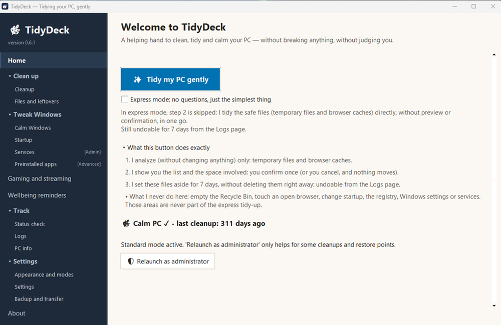
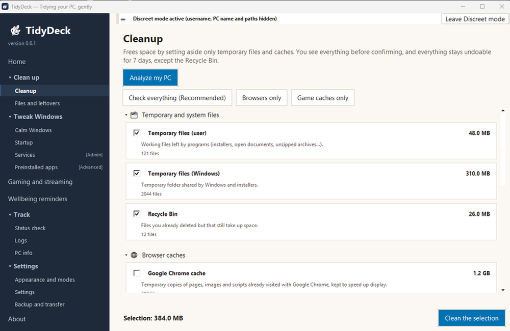
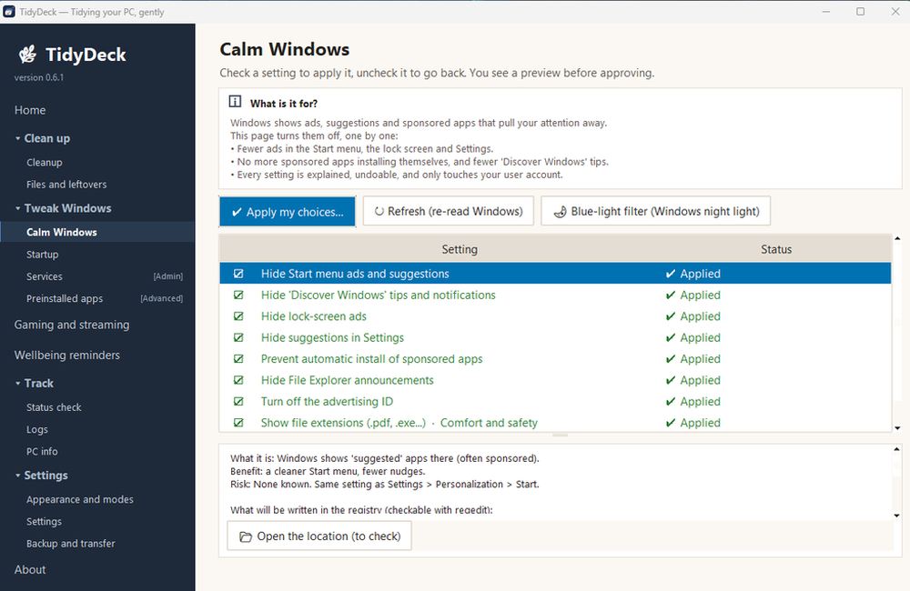
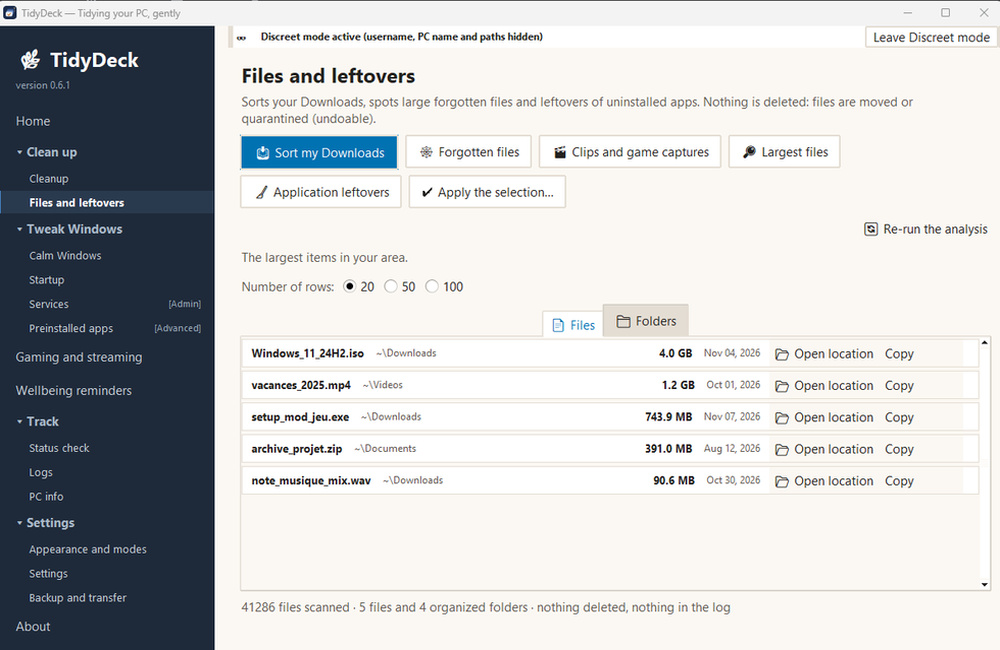
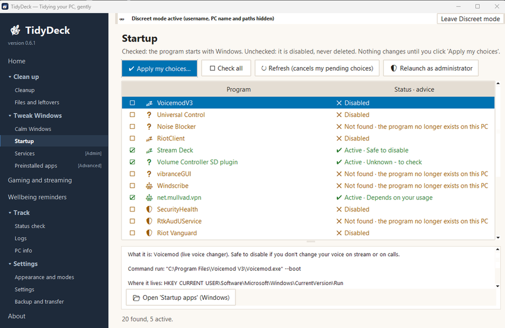
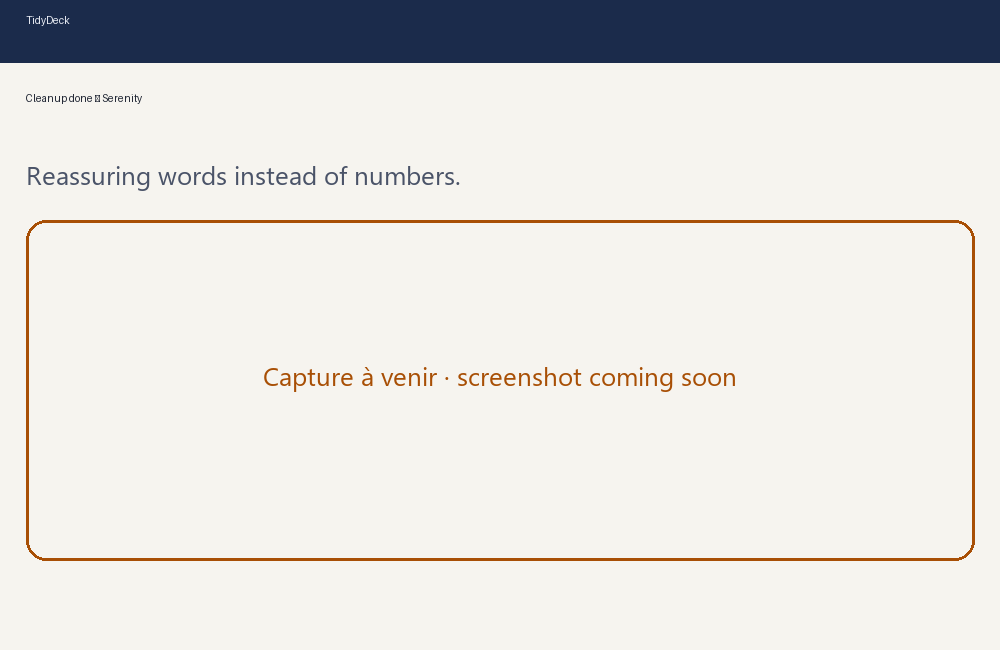

Cleans, tidies and calms your PC — without breaking anything, without judging you.
A PC cleaner that shows you everything before it acts.
- Free and open source (GPL-3.0)
- No account, no data collection
- Windows 10 and 11
- Nothing to install


Why I built TidyDeck
I knew something was off, long before knowing it was called ADHD. It made my life difficult everywhere: at school, in social relationships, at work.
I came up with this software for gamers, ADHD profiles, and colorblind users. It helps me play without worrying about missing an appointment, without feeling stuck in limbo all day.
Read my full storyCollapse
I knew something was off, long before knowing it was called ADHD.
It made my life difficult everywhere: at school, in social relationships, at work. A simple rustling of paper, a cough, someone sniffing in class…
It was impossible for me to concentrate, even slightly. I remember the immense struggle it took just to start simple homework.
Every day, I felt frustrated watching my classmates write, focus, and pull answers straight from their minds.
Hundreds and hundreds of thousands of thoughts racing every day, with no way to condense, stop, or quiet them.
I built this software for gamers, ADHD profiles, and colorblind users (featuring wellbeing reminders). It helps me game without anxiety about missing appointments thanks to gentle alerts, freeing me from being stuck in anxious standby mode.
Three promises
You see it before anything moves
Every list is shown, with real paths, before you confirm anything.
Everything can be undone for 7 days
What is tidied is set aside, restorable in one click from "Logs".
Nothing ever leaves your PC
No account, no telemetry. The only network access is the "Check for updates" button, and only if you click it.
What it does
Clean
Temporary files and caches. You see the list and the space reclaimed before confirming.
Cleaned items go into quarantine for 7 days. You can restore anything.


Calm Windows
Fewer suggestions, recommended apps, and "Get Windows tips" style pop-ups.
Only your chosen settings are modified, and each can be reverted simply by unchecking it.


Largest files
The list of the largest files and folders, in read-only mode.
TidyDeck shows you. It deletes nothing while scanning.


Startup
Advice on every program that launches with Windows: which ones are safe to turn off, and why.
Nothing changes without your agreement, and every change can be undone.


Wellbeing reminders
Gentle notifications to take a break, hydrate, or step away from the screen, designed not to abruptly shatter your focus.
Fully customizable or disableable to fit your current mood, complete with an appointment countdown timer designed for ADHD minds.
And also: an activity log of everything done, and a "Gaming and streaming" mode — reminders wait until your session ends.
What it does not do
- No « registry cleaner », no miracle promises.
- No account, no advertising, no telemetry.
- No background service, scheduled task, or installed driver.
- No data sent anywhere. The only network access occurs if you click the « Check for updates » button.
Only one action is permanent: emptying the Recycle Bin. That is what you asked it to do, and TidyDeck reminds you every time.
Four modes
You choose how TidyDeck speaks to you and what it displays. You can combine multiple modes.
- Serenity
- Only six visible entries, short sentences, nothing changes without your explicit agreement. Everything else is tucked under « More ».
- Advanced
- All pages and extra options: custom scan paths, line counts, full path copying.
- Colorblind
- A symbol, a word, and a brightness difference for every state. Never relying on color alone.
- Discreet
- Hides your username, PC name, and personal file paths on screen. Handy for live streams.


Download
Version 0.6.1 for Windows 10 and 11, built on November 7, 2026. No administrator privileges required at startup.
1. Get the file
Once the fingerprint is verified (step 2), extract the TidyDeck folder wherever you like (for instance C:\TidyDeck) and double-click TidyDeck.exe. To uninstall: simply delete the folder.
2. Verify file integrity
TidyDeck-0.6.1-win64.zip (12,032,934 bytes). Expected SHA-256 fingerprint:
d53bd12accc0f8432fcfb9b099a5c8c1d0f1518db9a80fd22d402f67a56d41c6For this step, leave the zip in your Downloads folder. Open the Start menu, type cmd, press Enter, then paste this line and press Enter:
certutil -hashfile "%USERPROFILE%\Downloads\TidyDeck-0.6.1-win64.zip" SHA256The middle line must match the fingerprint above. If the result differs, do not open the file.
Source code archive: TidyDeck-0.6.1.zip (470,144 bytes), expected fingerprint 422ae870fe75fa116c04827a73c149405e31c7bef5cf6f252e8b8205714669b8.
3. Check the antivirus analysis
VirusTotal, analysis of November 7, 2026: 0 engine out of 44 for the win64 package (report) and 0 engine out of 64 for the source archive (report). Details on the antivirus analysis page.
An antivirus score is a snapshot in time, not a guarantee. That is why the code is open source.
A Windows warning?
TidyDeck is not digitally signed yet. Windows (SmartScreen) may display « Windows protected your PC ». If you have verified the fingerprint, click « More info », then « Run anyway ». Details in the FAQ.
What's new
0.6.1 — released November 7, 2026
- Fully available in English.
- Clearer updates: one button checks the published version and opens the download page.
- You choose where it minimizes, including next to the clock.
- Advice on each startup program, so you know which ones are safe to turn off.
- Serenity mode: a cleanup summary with reassuring words instead of numbers.
- More caution around games: folders that may contain saves are never suggested.
- Faster to open on my PC, and many small fixes.
All versions and archives: the releases page on GitHub.
Support the project
TidyDeck is free and will always remain so. Donations are appreciated, but never mandatory.